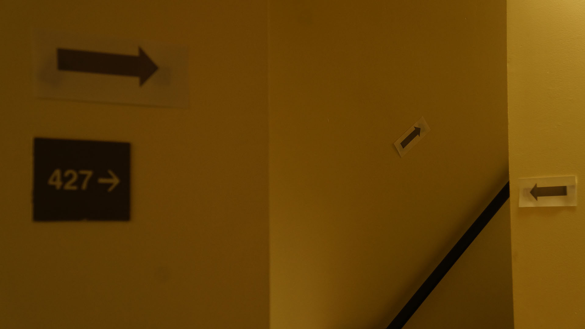
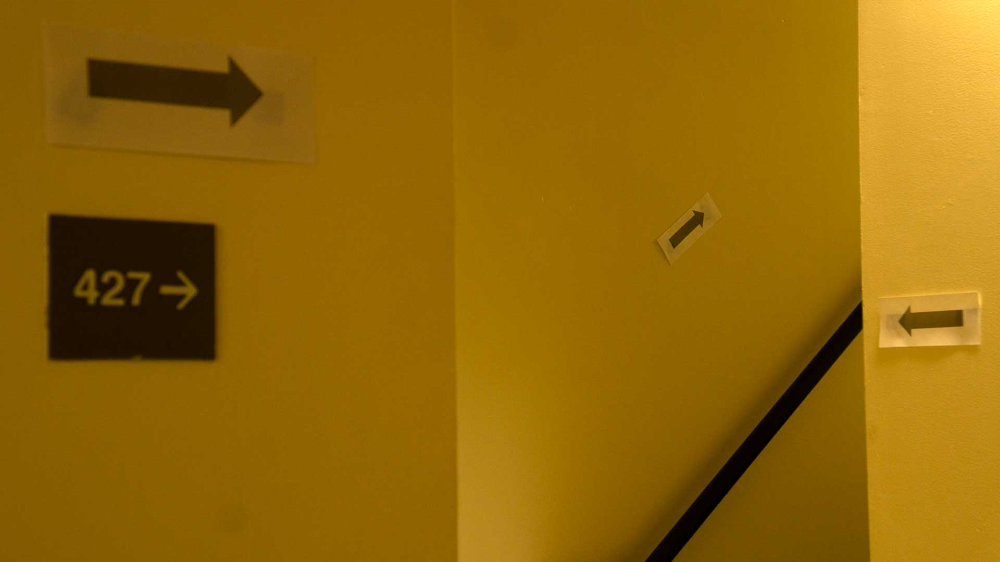

 
1920 px x 1080 px
The arrow photograph was chosen from my pictures due to my interest in the set of the arrows placed at different distances in the same part of the stairway. The three walls displaying the arrows received different light reflections and resulted in different hues of the same paint color. I wanted to recreate the sense of confusion I felt when I looked at these directions with a deep depth of field. I tried to capture the three walls to follow the 'rules of thirds'. I was able to brighten both pictures by moving the white point slider to the left on Curve. This method brought out a yellow color that emphasized the differences in hue of the walls in the "arrow" photograph.